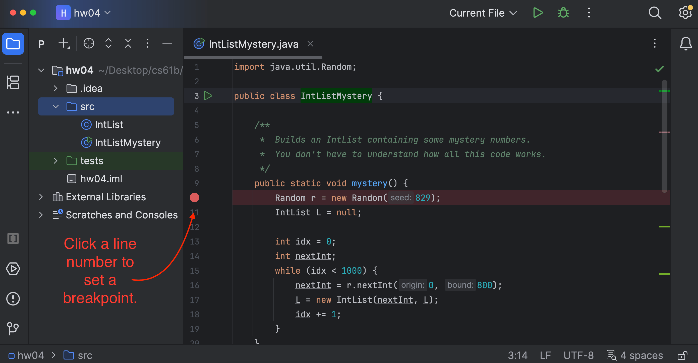
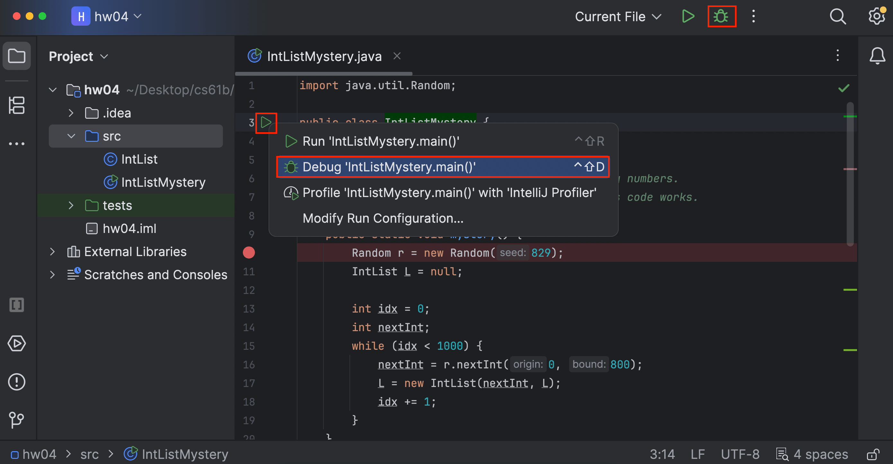
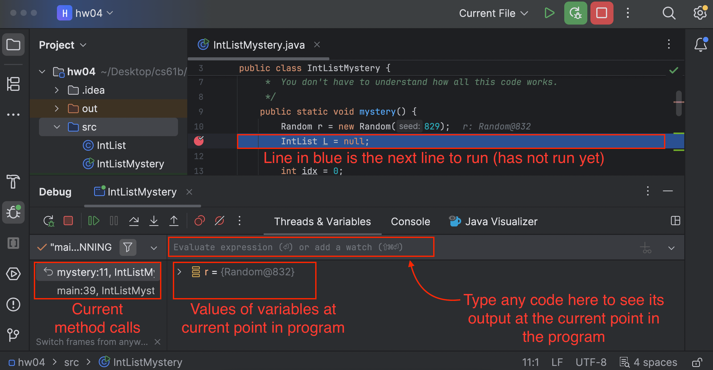
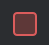
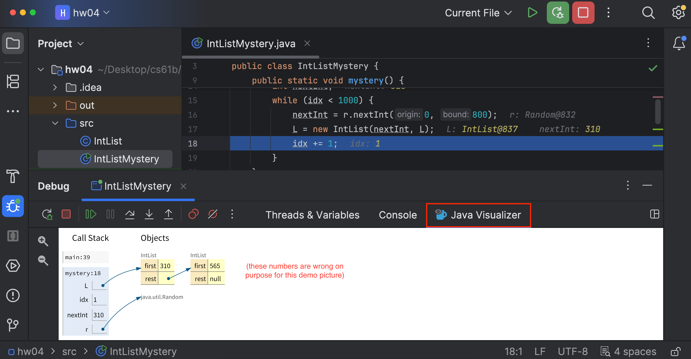
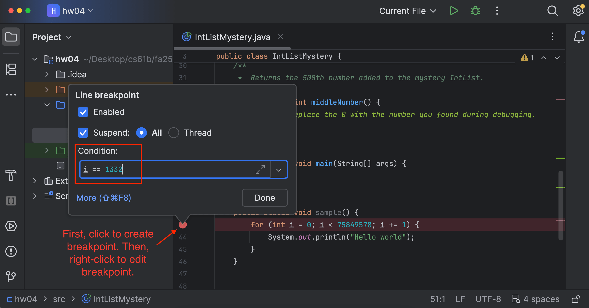
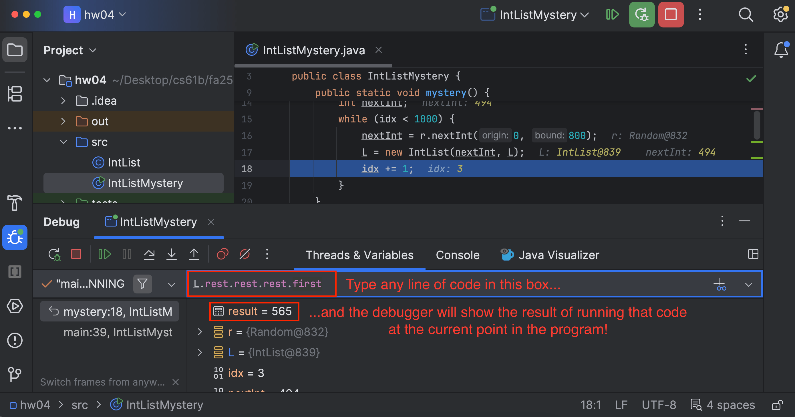

Homework 4: IntLists
Lectures needed for this homework: Lecture 3 (IntLists), or Chapter 3 of the textbook. Also, make sure you finished the setup in Homework 1.
Follow the Assignment Workflow Guide to get started with this assignment. This starter code is in the hw04 folder.
Reminder that you must follow the style guide, and that you can check style yourself in IntelliJ as many times as you want.
Starter Code
We’ll start from the IntList implementation from lecture:
public class IntList {
public int first;
public IntList rest;
public IntList(int f, IntList r) {
first = f;
rest = r;
}
/** Return the size of the list using... recursion! */
public int size() {
if (rest == null) {
return 1;
}
return 1 + this.rest.size();
}
/** Return the size of the list using no recursion! */
public int iterativeSize() {
IntList p = this;
int totalSize = 0;
while (p != null) {
totalSize += 1;
p = p.rest;
}
return totalSize;
}
/** Returns the ith item of this IntList. */
public int get(int i) {
if (i == 0) {
return first;
}
return rest.get(i - 1);
}
}
In this assignment, you’ll add some extra methods to this class that all increment the list, but in different ways. We’ve provided tests you can run for each of the methods.
Task 1: Increment (Recursive, Nondestructive)
Fill in the incrRecursiveNondestructive method in the provided code. Your solution should use recursion.
/**
* Returns an IntList identical to L, but with
* each element incremented by x. L is not allowed
* to change. Must use recursion.
*
* This method is non-destructive, i.e. it must not modify the original list.
*/
public static IntList incrRecursiveNondestructive(IntList L, int x) {
// TODO: Fill in this code
return null;
}
“Non-destructive” means that if we run:
IntList L = new IntList(5, null);
L.rest = new IntList(7, null);
L.rest.rest = new IntList(9, null);
IntList M = incrRecursiveNondestructive(L, 3);
Then M should be 8 -> 10 -> 12 -> null and L should remain 5 -> 7 -> 9 -> null.
Task 2: Increment (Recursive, Destructive)
Next, fill in the incrRecursiveDestructive method in the provided code.
/**
* Returns an IntList identical to L, but with
* each element incremented by x. Modifies the original list.
* You are not allowed to use "new" in this method.
*/
public static IntList incrRecursiveDestructive(IntList L, int x) {
// TODO: Fill in this code
return null;
}
This method should be destructive (also called “mutating” or “in-place”), i.e. it modifies the original list. That is, if you run the code below:
IntList L = new IntList(5, null);
L.rest = new IntList(7, null);
L.rest.rest = new IntList(9, null);
IntList M = incrRecursiveDestructive(L, 3);
Then both L and M should be 8 -> 10 -> 12 -> null.
Task 3: Increment (Iterative, Nondestructive)
Next you’ll write iterative versions of the two methods you just wrote. This method may be more difficult than the other versions. Feel free to do the later tasks and come back to this if you want!
/**
* Returns an IntList identical to L, but with
* each element incremented by x. Not allowed
* to use recursion. May not modify the original list.
*/
public static IntList incrIterativeNondestructive(IntList L, int x) {
// TODO: Fill in this code
}
To pass our autograder checks, you can’t use the recursive size and get methods in the iterative methods (Tasks 3 and 4). Our solutions don’t use size or get at all, but if you want to use them, consider using iterativeSize instead, and/or writing your own iterativeGet method instead.
Task 4: Increment (Iterative, Destructive)
Next, fill in incrIterativeDestructive.
/**
* Returns an IntList identical to L, but with
* each element incremented by x. Not allowed
* to use recursion. Modifies the original list.
* You are not allowed to use "new" in this method.
*/
public static IntList incrIterativeDestructive(IntList L, int x) {
// TODO: Fill in this code
return null;
}
Task 5: Concatenate
Lastly, implement the concatenate method.
/**
* Returns an IntList consisting of the elements of L1 followed by the
* elements of L2.
*/
public static IntList concatenate(IntList L1, IntList L2) {
// TODO: Fill in this code
return null;
}
You may write this method using recursion or iteration. Your method may be either destructive or non-destructive.
Introducing the Debugger
Why use the debugger?
In previous classes, you might have used print debugging to debug: adding print statements to see the values of certain variables as a program runs. While print debugging can be very useful, it has a few disadvantages:
- It requires you to modify your code, and clean it up after.
- It’s tedious to decide and write out exactly what you want to print. Printing isn’t always formatted nicely.
In this lab, we’ll show you a new technique, interactive debugging – debugging by using an interactive tool, or a debugger. We’ll focus on IntelliJ’s built-in debugger.
Breakpoints
Before starting the IntelliJ debugger, you should set a few breakpoints. Breakpoints mark places in your code where you can pause the program and see the values of all the variables. This:
- Doesn’t require you to modify your code or clean it up after, since breakpoints are ignored in normal execution.
- Lets you see all the variables without needing to write print statements.
- Lets IntelliJ display everything in a structured manner.
To set a breakpoint, click the area just to the right of the line number.

Interactive debugging
After setting breakpoints, we can start a debugging session! Click on the green triangle next to the class or test you want to debug (in test files there may be two green triangles). Instead of clicking the green triangle to run, click the debug option:

The program will now run until it hits its first breakpoint. A debugger window should also appear on the bottom of the interface, where the console was.

On the left, you will be able to see all current method calls and on the right, you will be able to see the values of instantiated variables at this point in the program (they will also be shown in gray text in the editor). For instances of classes, you can click the dropdown to expand them and look at their fields.
In the debugger, you have a few options:
- Learn something from the displayed values, identify what’s wrong, and fix your bug! Click

to stop the debug session. - Click to resume the program (until it hits another breakpoint or terminates).
- Click to advance the program by one line of code.
- does something similar, but it will step into any method called in the current line, while will step over it.
- will advance the program until after it returns from the current method.
- If you accidentally step too far and want to start the session over, click (at least right now, there isn’t a good way to directly step back).
Task 6: Using the Debugger
In IntListMystery.java, the mystery function creates an IntList and adds some mystery numbers to it. (You don’t have to understand the code in mystery.)
Set a breakpoint in the mystery function. Then, start the debugger, so that the program runs until the first time it reaches your breakpoint. From the debugger, can you figure out the first number added to the IntList?
If you’d like to view a box-and-pointer diagram in the debugger, click “Java Visualizer” in the debugger:

Your task: Use the debugger buttons (described above) to figure out the first 5 numbers added to the mystery IntList. Then, write the numbers in the firstFiveNumbers method.
Task 7: Conditional Breakpoints
Consider a program that loops 5000 times. Trying to step through each time to find the error wouldn’t be too efficient. Instead, you would want your program to pause on a specific iteration, such as the last one.
In other words, you would want your program to pause on certain conditions. To do so, create a breakpoint at the line of interest and open the “Edit breakpoint” menu by right-clicking the breakpoint icon itself. There, you can enter a boolean condition such that the program will only pause at this breakpoint if the condition is true. It will look something like this:

Your task: Use a conditional breakpoint to figure out the 500th number added to the mystery IntList. Then, write the number in the middleNumber method.
Hint: The list should have 499 elements just before adding this number, and 500 elements just after adding this number. You can the debugger has an “Evaluate Expression” tool that you can use to type a line of code and see the result. For example, you could type L.iterativeSize() in the box to see the current size of the IntList!

Optional Exercises
Discuss with others: Which IntList implementations felt the most natural? What made some of them harder than others?
If you want more practice, we’ve provided a few additional optional methods that you can implement in the IntList class: sum(), addLast(int x), and addFirst(int x). These methods are described in the source code.
Submission
Graded files that you need to modify:
IntList.javaIntListMystery.java
You must follow the style guide for IntList.java. (The style checker is turned off for IntListMystery.java.) You can check style yourself in IntelliJ as many times as you want.
Follow the Assignment Workflow Guide to submit. You can submit as many times as you want. The score you see on Gradescope is your final score for this homework.